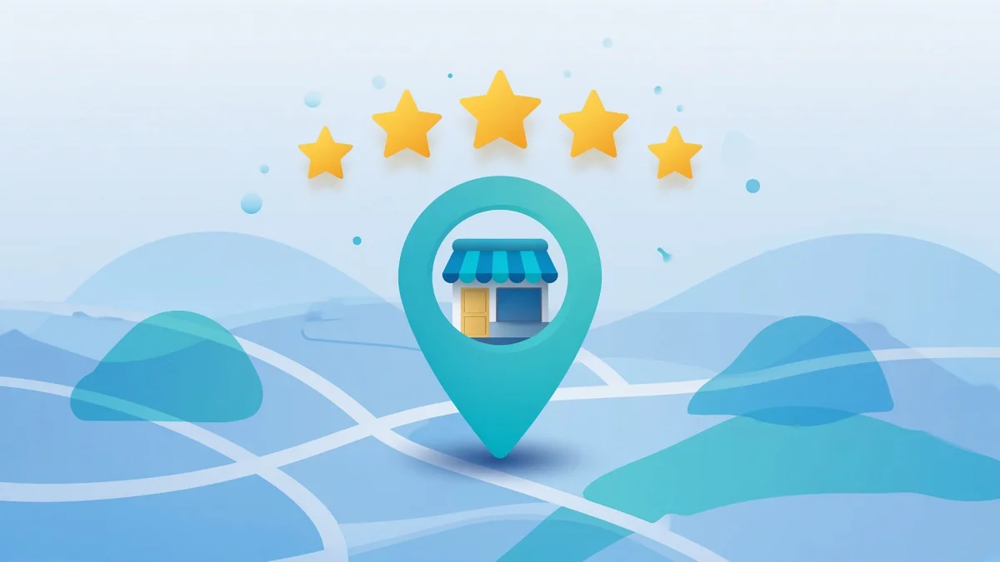

Do Google reviews affect your Maps ranking?

Short answer: yes, reviews are one of the popularity signals Google cites for local results, but they are not a switch that overrides distance or relevance. Helpful, genuine reviews can support how often you show in the map pack. Fake or paid reviews break Google's rules and can hurt you.
What Google says about reviews and local rank
Google's Business Profile help lists three main factors for local results: relevance, distance and prominence (popularity). On prominence it notes that review count and score can influence local ranking, and it encourages getting reviews from real customers (Tips to improve your local ranking on Google). That is not the same as a public formula. Reviews sit beside other prominence clues such as citations and brand mentions online.
| Factor | Role next to reviews |
|---|---|
| Relevance | How well your categories, attributes and profile match the search. Strong reviews will not fix a wrong category. |
| Distance | How far the searcher is from you. A competitor closer to the customer can still win. See why rankings change across town. |
| Prominence / popularity | How well known you are, including review signals among other sources. |
What reviews cannot do alone
- They cannot put you in the pack for a keyword your profile does not match.
- They cannot erase a distance disadvantage across your whole service area.
- They cannot replace a suspended or incomplete profile. Start with why a business is not showing if you are missing entirely.
- A short burst of identical five star blurbs looks spammy and may be removed under Google's prohibited and restricted content rules for reviews (Google review policies).
Practical review habits that still help customers
Ask real customers after a job, reply to reviews (including negative ones), and keep category and service info accurate so review text and profile agree. Google's ranking tips also stress a complete, accurate Business Profile. For broader pack tactics, see how to rank higher in the local map pack. If a rival with fewer reviews still beats you nearby, read why a competitor is outranking you.
How to measure impact without fooling yourself
Run the same keyword grid before a review push and again a few weeks later. Compare coverage and top 3 share, not a single search from your shop. How often to check Maps rankings and how to read a Maps rank grid cover cadence and metrics. Service area businesses should also read how service area businesses rank.
See pack coverage, not just star count
RankFootprint shows where you appear in Google Maps results across a grid of points, so you can tell whether reputation work is showing up where customers search. Scan results come from SerpApi, a third party API that retrieves Google Maps search results on our behalf. Results reflect what Google showed at the time of the scan. We do not guarantee any ranking.
FAQ
Do Google reviews affect Maps ranking?
Yes as part of popularity / prominence, alongside other signals. They do not override relevance or distance, and fake reviews are against Google's rules.
Does star rating matter more than review count?
Google does not publish a star versus count formula. It mentions both count and score. Steady, detailed, genuine reviews beat a thin set of perfect scores.
Can buying reviews improve my Google Maps pack position?
No. Paid, fake or incentivized reviews are prohibited and can be removed. Ask real customers instead.
How should I measure whether reviews helped my Maps ranking?
Compare the same keyword grid before and after over several weeks. Look at coverage and top 3 share, not one phone search from your address.
Related: How to rank higher in the local map pack · Why did my ranking drop? · How often to check Maps rankings · What is grid rank tracking?